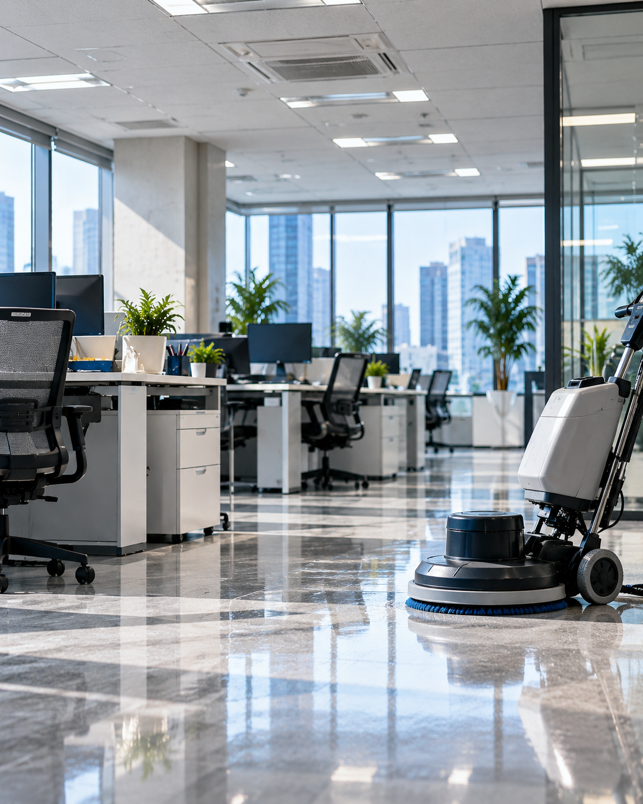

사무실
업무공간과 공용공간을 정기적으로 관리합니다.

REGULAR CLEANING
사무실, 병원, 학원, 상가, 건물 등 공간의 특성과 이용 환경에 맞춰 청소 범위와 주기를 설계하고 지속적으로 관리합니다.
REGULAR MANAGEMENT
많은 사람이 매일 이용하는 사업장은 먼지, 바닥 오염, 쓰레기, 화장실과 공용공간의 상태가 지속적으로 달라집니다. 푸르른은 정해진 작업을 반복하는 데 그치지 않고 현장의 이용 환경과 관리 상태를 확인하며 필요한 청소 범위와 주기를 설정합니다.
MANAGED SPACE
업무공간과 공용공간을 정기적으로 관리합니다.
이용 환경을 고려해 청결 관리 범위를 설정합니다.
교실과 복도 등 이용 빈도가 높은 공간을 관리합니다.
고객이 이용하는 공간의 청결 상태를 관리합니다.
계단과 출입구 등 공용공간을 정기적으로 관리합니다.
CLEANING SCOPE
아래 항목을 기본으로 현장 상태와 계약 범위에 따라 필요한 작업을 협의합니다.
바닥 재질과 오염 상태를 고려해 관리합니다.
업무공간과 공용부의 주요 먼지를 관리합니다.
계약 범위에 따라 화장실 청결 상태를 관리합니다.
공용으로 사용하는 탕비 공간을 관리합니다.
현장 운영 방식에 맞춰 수거 범위를 협의합니다.
방문객이 자주 이용하는 주요 공간을 관리합니다.
건물 계단과 난간 등 공용 동선을 관리합니다.
공간에 필요한 별도 항목은 확인 후 범위를 정합니다.
CLEANING FREQUENCY
공간의 크기, 이용 인원, 오염 정도와 필요한 작업 범위를 확인한 뒤 적절한 관리 주기를 협의합니다.
정기적인 기본 관리가 필요한 공간
이용 빈도가 높아 반복 관리가 필요한 공간
평일 중심으로 지속적인 관리가 필요한 공간
현장 운영시간과 필요 범위에 맞춰 협의
※ 실제 작업 범위와 주기는 현장 확인 및 상담 후 결정됩니다.
PURURUN MANAGEMENT
푸르른은 현장을 파악하고 관리 기준을 설정한 뒤 작업 결과와 관리 상태를 지속적으로 확인합니다.
공간의 용도와 이용 환경, 필요한 관리 범위를 확인합니다.
현장 특성에 맞는 작업 범위와 관리 기준을 설정합니다.
계획된 관리 기준에 따라 필요한 작업을 진행합니다.
작업이 기준에 맞게 진행되었는지 결과를 확인합니다.
관리 상태를 확인하고 개선이 필요한 부분을 점검합니다.
정기적인 관리를 통해 공간의 청결 품질을 유지합니다.
QUALITY CONTROL
현장별 작업 기준을 정하고 필요한 관리 항목을 확인합니다.
작업 완료 후 현장 상태와 필요한 사항을 확인합니다.
지속적인 품질관리를 위해 현장의 관리 내용을 기록합니다.